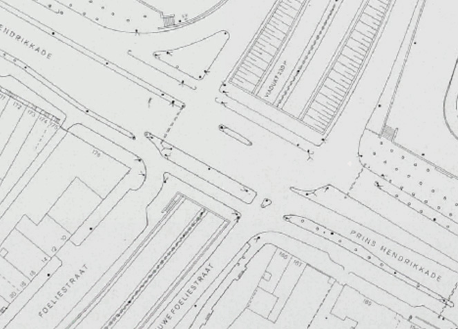
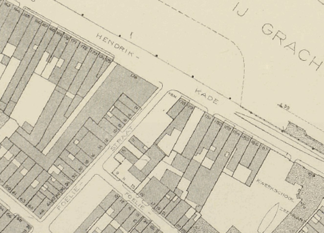
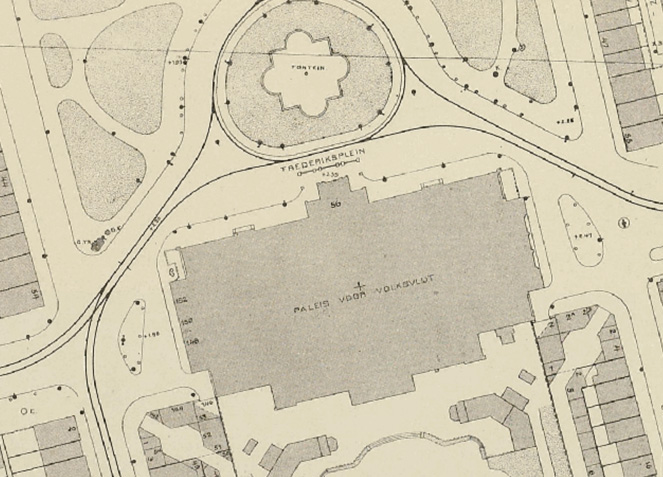
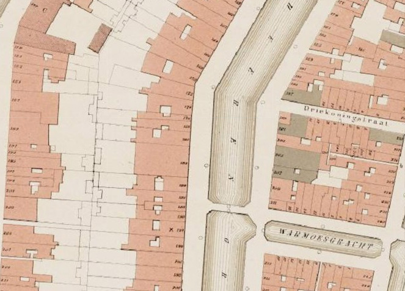
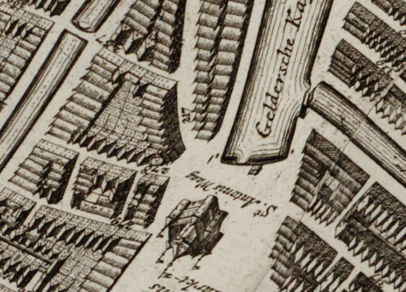
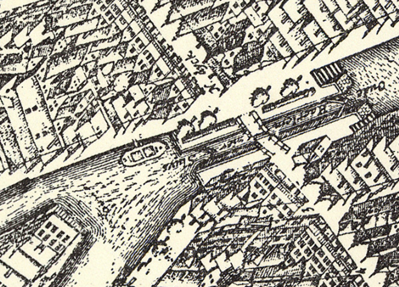

1985 - Dienst Openbare Werken
De kaarten zijn gemaakt door de inmiddels hernoemde
Dienst der Publieke Werken. De afzonderlijke bladen, te vinden in
de beeldbank van het Stadsarchief, zijn door Jan Hartmann gegeorefereerd en samengevoegd.
https://vt1.maps.geocoders.nl/atm-tiles/pw_1985_EPSG3857/{z}/{x}/{y}.png

1943 - Dienst der Publieke Werken
In de oorlogsjaren maakte de Dienst der Publieke Werken naast de 1:1000 bladen ook 1:2500 kaarten. Die laatste krijgt u op de lagere zoomniveaus voorgeschoteld. De kaarten zijn door Jan Hartmann gegeorefereerd en samengevoegd.
https://vt1.maps.geocoders.nl/atm-tiles/pw_1943_EPSG3857/{z}/{x}/{y}.png

1909 - Dienst der Publieke Werken
De eerste serie 1:1000 bladen van de Dienst der Publieke Werken stamt uit 1909. Doordat de Dienst een eigen projectie gebruikte, kunnen de kaarten uit deze serie een afwijking tot een meter of twee hebben. De kaarten zijn door Jan Hartmann gegeorefereerd en samengevoegd.
https://vt1.maps.geocoders.nl/atm-tiles/pw_1909_EPSG3857/{z}/{x}/{y}.png

1876 - Buurtatlas Loman
In 1876 bracht uitgever J.C. Loman jr. een gedrukte
atlas in 101 bladen op de markt, waarop de dan net doorgevoerde tweede
omnummering is opgenomen. De kaarten zijn door Jan Hartmann gegeorefereerd en samengevoegd.
http://t{s}.maps.geocoders.nl/dgg/og06mu2w/{z}/{x}/{y}.jpeg

1724 - Gerrit de Broen
De kaart van Gerrit de Broen is gemaakt toen de stormachtige groei die eind 16e eeuw was ingezet al ten einde was. De Plantage en oostelijke eilanden bieden nog zeeën van ruimte, veel zou de stad de anderhalve eeuw daarop niet veranderen. De kaartbladen zijn gegeorefereerd en samengevoegd door Webmapper.
http://t{s}.maps.geocoders.nl/dgg/d7bcno4e/{z}/{x}/{y}.png

1625 - Balthasar Florisz. van Berckenrode
In 1625 is de
derde uitleg, waarbij de westelijke grachtengordel gereed is gekomen, net aangelegd. Ook de Jordaan in wording is te zien. De kaartbladen zijn gegeorefereerd en samengevoegd door Webmapper.
http://t{s}.maps.geocoders.nl/dgg/uibzebxa/{z}/{x}/{y}.png
Van alle kaarten zijn door Webmapper tiles gemaakt, die onder een CC-BY licentie worden aangeboden.